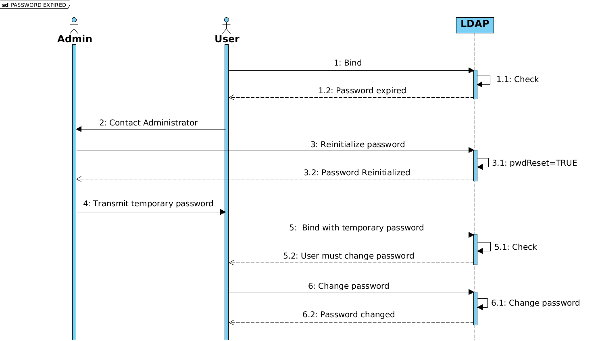

Table of Contents
LDAP
| Authentification | Utilisateurs | Mot-de-passe |
|---|---|---|
| ✔ | ✔ | ✔ |
Présentation
LL::NG peut utiliser un annuaire LDAP pour :
- authentifier les utilisateurs
- obtenir les attributs utilisateurs
- obtenir les groupes dont l'utilisateur est membre
- changer les mots-de-passe (avec la gestion de la politique de mot-de-passe côté serveur)
Ceci fonctionne avec tout serveur LDAP v2 ou v3, dont Active Directory.
LL::NG est compatible avec la politique de mots-de-passe LDAP :
- Le server LDAP server peut vérifier la solidité du mot de passe et le portail LL::NG affichera les erreurs correctes (mot-de-passe trop court, dans l'historique, etc…)
- Le serveur LDAP peut bloquer les attaques par force brute et LL::NG affichera que le compte est bloqué
- Le serveur LDAP peut imposer le changement de mot-de-passe à la première connexion et le portail LL::NG affichera le formulaire de changement de mot-de-passe avant d'ouvrir la session SSO
Configuration
Dans le manager, aller dans Paramètres généraux > Modules d'authentification et choisir LDAP) pour les modules authentification, utilisateurs et/ou mots-de-passe.
Niveau d'authentification
Le niveau d'authentification accordé aux utilisateurs authentifiés par ce module.
Comme LDAP est un module de type login/mot-de-passe, le niveau d'authentification peut être :
- augmenté (+1) si le portail est protégé par SSL (HTTPS)
- diminué (-1) si l'autocompletion est autorisée sur le portail (voir Personnalisation du portail)
Variables exportées
Liste d'attributs à interroger pour trouver la session utilisateur. Voir aussi la configuration des variables exportées.
Connexion
- Nom de serveur : nom du serveur LDAP ou URI (par défaut : localhost). Autres possibilités :
- Plusieurs serveurs peuvent être renseignés séparés par des virgules ou espaces. Ils seront testés dans l'ordre indiqué.
- Pour utiliser TLS, utiliser
ldap+tls://serveret pour utiliser LDAPS, indiquerldaps://serverau lieu du nom de serveur. - En utilisant TLS, il est possible d'utiliser toutes les options de la fonction start_tls() Net::LDAP telle
ldap+tls://server/verify=none&capath=/etc/ssl. You can also use cafile and capath parameters.
- Port du serveur : port TCP du serveur LDAP. Peut être surchargé par une <a3>URI</a3> LDAP dans le nom du serveur.
- Base de recherche des utilisateurs : base de recherche de l'annuaire LDAP.
- Compte : DN à utiliser pour se connecter au serveur LDAP. Par défaut, une connexion anonyme est utilisée.
- Mot-de-passe : mot-de-passe à utiliser pour se connecter au serveur LDAP. Par défaut, une connexion anonyme est utilisée.
- Timeout : délai maximum de connexion.
- Version : version du protocole LDAP.
- Attributs binaires : expression régulière correspondant aux attributs binaires (voir la documentation Net::LDAP).
Filters
Dans les filtres LDAP, $user est remplacé par le nom du compte et $mail par l'adresse email.
- Default filter: default LDAP filter for searches, should not be modified.
- Filtre d'authentication : filtre pour trouver l'utilisateur à partir de son login (défaut :
(&(uid=$user)(objectClass=inetOrgPerson))) - Filtre mail : filtre pour trouver l'utilisateur à partir de son mail (défaut:
(&(mail=$mail)(objectClass=inetOrgPerson))) - Déréférence d'alias : comment gérer les alias LDAP. (défaut:
find)
Pour Active Directory, le filtre d'authentification par défaut est :
(&(sAMAccountName=$user)(objectClass=person))
Et le filtre d'adresse mail est :
(&(mail=$mail)(objectClass=person))
Groupes
- Base de recherche : DN de la branche des groupes. La recherche des groupes est désactivé si cette valeur est vide.
- Classe d'object: objectClass du groupe (défaut: groupOfNames).
- Attribut cible : nom de l'attribut du groupe stockant le lien vers l'utilisateur (défaut: member).
- Attribut source utilisateur : nom de l'attribut utilisateur utilisé dans le lien (défaut: dn).
- Attributs recherchés : nom(s) de l'attribut stocké dans le nom du groupe, séparés par des espaces (défaut: cn).
- Récursivité : active la fonctionnalité récursive (défaut: 0). Si activé et si le groupe de l'utilisateur est membre d'un autre groupe (groupes de groupes), tous les groupes parents seront considérés comme groupes de l'utilisateur.
- Attribut source du groupe : nom de l'attribut dans l'entrée groupe utilisé dans le lien pour la recherche récursive de groupe (défaut : dn).
Mot-de-passe
- Contrôle de politique de mot-de-passe : active l'utilisation de la politique de mots-de-passe LDAP. Nécessite une version de Net::LDAP égale ou supérieure à 0.38. (voir le procédé de politique de mots-de-passe ci-dessous)
- Opération étendue de modification de mot-de-passe : active l'utilisation de l'opération étendue de
modification de mot-de-passeLDAP au lieu de l'opération standard. - Change comme utilisateur : active la modification du mot-de-passe avec les éléments d'authentification de l'utilisateur connecté. Nécessite de requérir l'ancien mot-de-passe (voir personnalisation du portail).
- LDAP password encoding: can allow one to manage old LDAP servers using specific encoding for passwords (default: utf-8).
- Utiliser l'attribut reset : activé pour utiliser l'attribut reset du mot-de-passe. Cet attribut est activé par LemonLDAP::NG lorsque le mot-de-passe a été réinitialisé par mail et que l'utilisateur a choisi de générer le mot-de-passe (défaut : activé).
- Attribut reset : nom de l'attribut reset du mot-de-passe (défaut : pwdReset).
- Valeur de reset : valeur à mettre dans l'attribut reset pour activer la réinitialisation du mot-de-passe (défaut : TRUE).
- Allow a user to reset his expired password: if activated, the user will be prompted to change password if his password is expired (default: 0)
Procédé d'avertissement avant expiration du mot-de-passe

Procédé d'expiration du mot-de-passe
